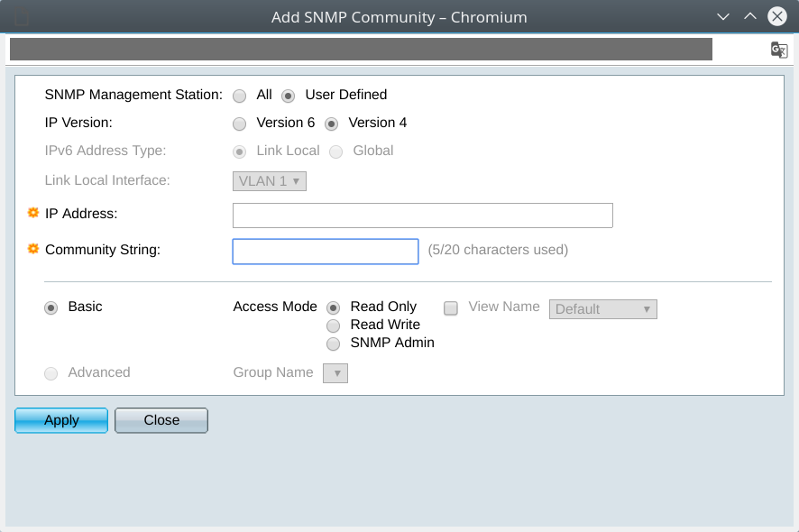

SNMP is a protocol largely used to monitor network hardware, and I would have used it to monitor my CISCO SG200 but the implementation is very limited. For instance, this switch doesn't have temperature sensor. This post walks you through configuring the swith then installing SNMP tools on your computer.
Switch configuration
The web console is the only way to manage the SG200 because it doesn't support any CLI.
- Create an SNMP community: SNMP > Communities

-
Allow SNMP service : Security > TCP/UDP Services
-
Save the new configuration
Install SNMP tools
- Install Net SNMP
# emerge -pv net-analyzer/net-snmp
- Create directory for MIB files
$ mkdir -p ~/.snmp/mibs
$ cd ~/.snmp/mibs
- Download MIB
$ wget http://www.circitor.fr/Mibs/Mib/C/CISCOSB-MIB.mib
$ wget http://www.circitor.fr/Mibs/Mib/C/CISCOSB-HWENVIROMENT.mib
$ wget http://www.circitor.fr/Mibs/Mib/C/CISCOSB-rndMng.mib
SNMP request
- Parse all OID
$ snmpwalk -Os -v2c -c private 10.93.3.25 .1.3.6.1.4.1.9.6.1
Processor
- CPU utilization during last second
$ snmpwalk -m ~/.snmp/mibs/CISCOSB-rndMng.mib -Os -v2c -c private 10.93.3.25 .1.3.6.1.4.1.9.6.1.101.1.7
rlCpuUtilDuringLastSecond.0 = INTEGER: 21
- CPU utilization during last minute
$ snmpwalk -m ~/.snmp/mibs/CISCOSB-rndMng.mib -Os -v2c -c private 10.93.3.25 .1.3.6.1.4.1.9.6.1.101.1.8
rlCpuUtilDuringLastMinute.0 = INTEGER: 1
- CPU utilization during last 5 minutes
$ snmpwalk -m ~/.snmp/mibs/CISCOSB-rndMng.mib -Os -v2c -c private 10.93.3.25 .1.3.6.1.4.1.9.6.1.101.1.9
rlCpuUtilDuringLast5Minutes.0 = INTEGER: 1
Fan
$ snmpwalk -m ~/.snmp/mibs/CISCOSB-HWENVIROMENT.mib -Os -v2c -c public 10.93.3.25 .1.3.6.1.4.1.9.6.1.101.83
rlEnvMonFanStatusDescr.67109249 = STRING: fan1_unit1
rlEnvMonFanStatusDescr.67109250 = STRING: fan2_unit1
rlEnvMonFanStatusDescr.67109251 = STRING: fan3_unit1
rlEnvMonFanStatusDescr.67109252 = STRING: fan4_unit1
rlEnvMonFanState.67109249 = INTEGER: normal(1)
rlEnvMonFanState.67109250 = INTEGER: notPresent(5)
rlEnvMonFanState.67109251 = INTEGER: notPresent(5)
rlEnvMonFanState.67109252 = INTEGER: notPresent(5)
rlEnvFanDataStackUnit.1 = INTEGER: 1
rlEnvFanDataTemp.1 = INTEGER: 0
rlEnvFanDataSpeed.1 = INTEGER: 0
rlEnvFanDataOperLevel.1 = INTEGER: 0
rlEnvFanDataAdminLevel.1 = INTEGER: 0
rlEnvFanDataDirection.1 = INTEGER: unKnown(1)
As you can see, the temperature data (FanDataTemp) is not relevant. Another OID regarding temperature is ".1.3.6.1.4.1.9.9.13.1.3.1.3" from CISCOSB-HWENVIROMENT.mib but it's not supported by Switch SG200.